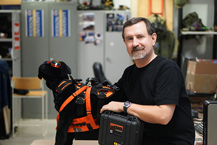

Projects
Present and past projects. Click to learn more.


{kind=link}
{kind=link}

About Alex
In 1995 his Daughter Charlotte was born and In 1997 he was lucky enough to receive his second daughter Cassandra. He and his wife Charmaine are very happy with the way things have turned out with the family so far.
In 2002 Charmaine was diagnosed with stage 2, estrogen receptor positive breast cancer. She found a rather large lump herself after experiencing what she thought was a pulled muscle. She had undergone a breast exam a month previously by a trained physician. After 2 partial masectomies, it was determined that the margins of the tumor were still microscopically pre-cancerous. She had her right breast removed. She went through 8 sessions of chemo-therapy involving 4 sessions of AC and 4 session of Taxotere which were followed by 25 sessions of radiation. 2002 was not a good year. We live in anticipation of some useful results in this field.
Things got way better. Alex is amazed at how things can change so radically. The Ferworn family is together and making its way through life. Charmaine is now a teacher--having received her masters degree from Canisius College in Buffalo and her credentials from the Ontario College of Teachers.
Alex's research took many turns revolving around the broad fields of mobile robotics and telepresence. He took a long sojourn into the realm of assistive technology with a project called NEPWAK but ultimately gave up.
In about 2005 He fell into the world of Computational Public Safety in the areas of Urban Search and Rescue (USAR), and Chemical, Biological, Radiological and Nuclear explosive (CBRNe), Reponse Robotics, and dogs...lots and lots of dogs. The first, and probably most successful, project is Canine Augmentation Technology (CAT) adding technology components to dogs to allowing them to act as a sort of robot surrogate where there speed, agility and sense of smell make robots no match for them. The project was awarded the two Ontario Government Showcase Awards of Excellence for project achievement in 2007.
Because of CAT, he is proud to say that he has many friends in the Emergency First Responder communities in both Canada and the United States and he tries not to piss them off.
Alex is the founder and director of the Computer Science Master of Science (M.Sc.) Program and Doctor of Philosophy (Ph.D.) in Computer Science at Ryerson as well as the academic lead in Ryerson's fledgling Certificate in Disaster and Emergency Management programs. More on these things in the near future...Oh, and he was promoted to the rank of Professor.
In 2010 he began working with the G. Raymond Chang School of Continuing Education where he had a hand in producing 10 new Certificate programs with the able assistance of Anne-Marie Brinsmead. He is the Academic Coordiantor for many and also acts as the Faculty Liaison between the Chang School and the Faculty of Science and the Faculty of Engineering and Architectural Science.
In 2012 Alex was engaged by the Yeates School of Graduate Studies as the Director of Professional Graduate Programs to start launching Professional Masters Programs (PMDip).
In 2009 it was suggested that a more formal arrangement be made with the Ontario Provincial Police (OPP) where he received training and became (briefly) an OPP Auxiliary (2009) where he was attached to the Provincial Emergency Response Team (PERT) which became the USAR and CBRNe Response Team (UCRT) in Bolton, Ontario. He retired as an Auxiliary in 2010. He also was selected by the Information Technology Association of Canada (ITAC) to receive its prestigeous "IT Hero Award".
In addition he received some teaching recognition by being nominated as one of TV Ontario's "Best Lecturers" in their Big Ideas program. In 2011 Research continued in the area of Computation Public Safety with forays into the mapping and modeling of disaster rubble as featured in Maclean's Magazine. In addition, the Canine Assisted Robot Deployment System (CARD) was successfully tested with all manner of robots.
In 2013, Alex was asked to present a TEDx talk, He also participated in the first ever EURAXESS Science Slam competition and was named the Canadian champion. In 2014, he received the Partners in Research 2014 National Technology Ambassador award.
He is happy that he has a chance to help launch so many intelligent young people into the world.
Ryerson the First Time
In 1983 he was accepted in the Department of Mathematics, Physics and Computer Science at Ryerson Polytechnic Institute and began attending in 1984 vowing that he would never let happen what happened at U of T at Ryerson (ask him some time). He graduated in 1988 with some relief.Master's and Doctoral Degrees
He was accepted into the M.Sc. program of the University of Guelph's Department of Computing and Information Science where he was supervised into submission by Dr. Deborah Stacey. He graduated in 1992 and has had a sentimental spot in his heart for the U of Guelph ever since. He went to work for a while and still didn't like it. Dr. Stacey came through again and consented to supervise him during his doctoral studies. After what seemed like an eternity, he received his doctorate from The Department of Systems Design Engineering at the University of Waterloo--or, as he prefers to call it--"my own personal hell". His area of specialization was autonomy and autonomous systems. Unfortuneately he doesn't have any big "scientific" theories about achieving it but he does have some interesting techniques and methodologies and some notions of how to measure it.Ryerson the Second Time
He joined Ryerson as a tenure track Assistant Professor in 1996 after 10 years in the telecommunication industry, predominantly with Bell Canada affiliated companies. One of his first triumphs was to change the language of instruction in Ryerson's CS1 (CPS109) and 2 courses to Java. He also reintroduced CPS607 as a going concern. He likes to teach, has received formal training in methods of instruction from the Canadian Forces and hopefully does a credible job at teaching.
He is a former member of The Royal Regiment of Canada. He joined this infantry unit as a private recruit in 1980. He held every appointment it was possible to hold in a rifle company at various points in his career and many Senior NCO and Junior Officer appointments within the Battalion including Colour Sergeant, Communications Officer, Assistant Adjutant, Assistant Training officer, Musketry Officer, and whole bunch that make absolutely no difference at this point.
He received the Canadian Forces Decoration (That CD thing in his title) in 1992 and coincidently his M.Sc.from the Department of Computing and Information Science at the University of Guelph . He was appointed the Officer Commanding (OC) the unit's Combat Service Support Company (58 Coy) in 1993. He retired with the rank of Captain in 1994...he will never look that good again!
The best thing about the army was meeting his wife Charmaine in 1983 (who he actually trained as a recruit). They were married in 1989.
Get In Touch
Please fill out the form below to send us an email and we will get back to you as soon as possible.
Contact Info
Address350 Victoria St,
Toronto, ON M5B 2K3
Phone (416) 979-5000 x 6968
Email aferworn@ryerson.ca